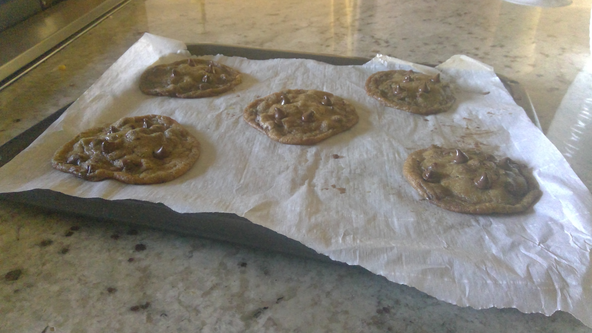
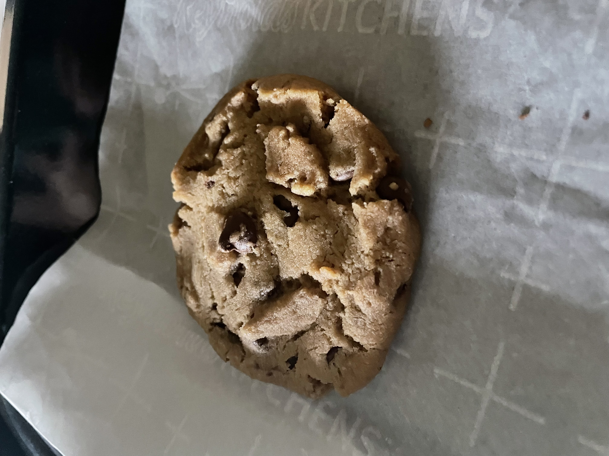

This page says a bit more about me.
When I am not studying, I like reading mystery books, binge watching TV shows, dancing to pop music, and trying new eggless baking experiments.
These are my favorite books:
The table below shows my thoughts on the TV shows I watched this past summer:
| TV Show Name | Worst Season | Best Season |
|---|---|---|
| Stranger Things | 5 | 1 |
| Avatar: The Last Airbender | 1 | 3 |
| The Summer I Turned Pretty | 2 | 3 |
| Wednesday | 2 | 1 |
I also love building projects from scratch. For a highschool compeitition, I made a functional mass-force sensing device (glorified scale)

Although I am a terrible cook, I can bake some simple things. Here is my favorite before & after eggless chocolate chip cookies:
 